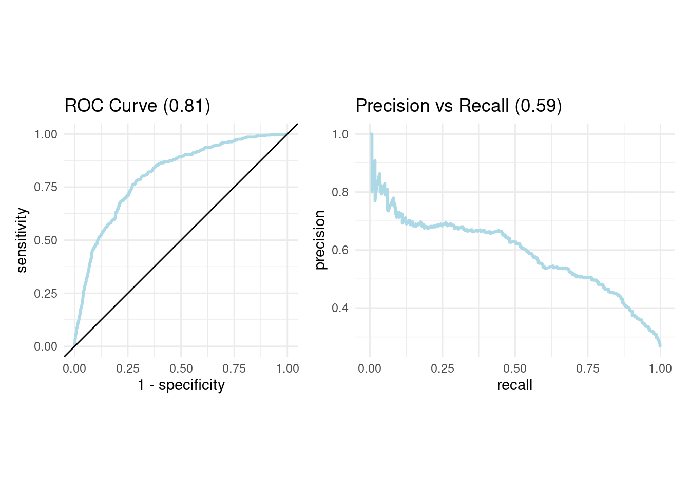

Capítulo 8 A/B testing
Los modelos de machine learning en la gran mayoría de las ocasiones tienen un propósito comercial. Como científicos de datos, es nuestra responsabilidad ayudar al negocio a tomar mejores decisiones que beneficien a la empresa en donde se ha desarrollado el modelo predictivo. Particularmente, una de las aplicaciones de mayor impacto en los últimos años es la reducción del CHURN
El churn rate o tasa de cancelación, es el porcentaje de clientes o suscriptores que dejan de utilizar los servicios que ofrece una empresa.

Es bastante conocido en el mundo del marketing que es mucho más caro adquirir nuevos clientes que retener a aquellos con los que ya cuenta la empresa. Es por esta razón que adicional a los esfuerzos de captar nuevos clientes se realizan esfuerzos por retener a los clientes con alta probabilidad de abandonar la empresa.
A partir de los modelos de machine learning que han sido estudiados en el curso para detectar la posible inclusión a una categoría (cancelación de clientes) es que se realizará en este capítulo el estudio de técnicas para cuantificar el impacto de los modelos predictivos y de las estrategias de retención.
Existen múltiples estrategias que surgen en las áreas de marketing para retener a los clientes. Hay una inversión muy grande de dinero que busca encontrar las mejores ideas que contribuyan a la retención. Sin embargo, poner todas estas ideas y estrategias a trabajar puede ser bastante costoso y riesgoso.
¿Qué pasa si la empresa gasta grandes cantidades de dinero en campañas publicitarias y estas no ayudan a alcanzar la meta?
¿Qué sucede si se le invierte mucho tiempo en refinar la estrategia y esta nunca atrae a los clientes esperados?
Este capítulo está destinado a discutir métodos de evaluación de esas ideas, de modo que antes de comprometernos completamente con una campaña e implementarla con todos los clientes, podamos hacer pequeñas pruebas con significancia estadística para determinar cuál de ellas tiene el mejor impacto sobre los objetivos planteados.
8.1 Elementos en riesgo
El primer paso es detectar a los posibles canceladores de servicios para la empresa. Esta tarea ha sido ampliamente estudiada en el curso mediante múltiples modelos predictivos, entre los que se encuentran:
- Regresión bernoulli (logística)
- Regresión Ridge
- Regresión Lasso
- KNN
- Árbol de decisión
- Bagging
- Bosque aleatorio
- Support Vector Machine
- Boosting
- Stacking
Recordemos que anteriormente ya se ha realizado la partición de los datos y se cuenta con varias configuraciones de cada modelo.
library(tidyverse)
library(tidymodels)
library(readr)
library(patchwork)
telco <- read_csv("data/Churn.csv")
set.seed(1234)
telco_split <- initial_split(telco, prop = .70)
telco_train <- training(telco_split)
telco_test <- testing(telco_split)
svm_tune_class_result <- readRDS("models/svm_model_class.rds")A partir de los resultados de los modelos, se realizó una priorización para determinar cuál de ellos eran los más valiosos en términos de predicción.
show_best(svm_tune_class_result, n = 10, metric = "roc_auc")## # A tibble: 10 × 9
## cost rbf_sigma margin .metric .estimator mean n std_err .config
## <dbl> <dbl> <dbl> <chr> <chr> <dbl> <int> <dbl> <chr>
## 1 1.23 0.00686 -1.20 roc_auc binary 0.808 7 0.00593 Preprocessor1_…
## 2 1.02 0.0303 0.230 roc_auc binary 0.805 9 0.00529 Preprocessor1_…
## 3 1.05 0.00823 0.904 roc_auc binary 0.805 9 0.00624 Preprocessor1_…
## 4 1.14 0.0215 1.11 roc_auc binary 0.804 10 0.00505 Preprocessor1_…
## 5 1.14 0.0154 -1.91 roc_auc binary 0.803 8 0.00625 Preprocessor1_…
## 6 1.19 0.0306 -1.45 roc_auc binary 0.803 10 0.00517 Preprocessor1_…
## 7 1.06 0.0350 -1.54 roc_auc binary 0.803 10 0.00517 Preprocessor1_…
## 8 1.22 0.0360 0.552 roc_auc binary 0.803 10 0.00517 Preprocessor1_…
## 9 1.36 0.0368 0.596 roc_auc binary 0.803 10 0.00515 Preprocessor1_…
## 10 1.11 0.00676 -1.42 roc_auc binary 0.802 9 0.00670 Preprocessor1_…Y mediante una elección de métrica y método, se seleccionó al más valioso para re-entrenarse usando todos los datos disponibles de entrenamiento.
svm_classification_best_model <- select_best(svm_tune_class_result, metric = "roc_auc")
svm_classification_best_model## # A tibble: 1 × 4
## cost rbf_sigma margin .config
## <dbl> <dbl> <dbl> <chr>
## 1 1.23 0.00686 -1.20 Preprocessor1_Model043set.seed(1352)
svm_classification_final_model <- svm_class_workflow %>%
finalize_workflow(svm_classification_best_model) %>%
parsnip::fit(data = telco_train)Mediante este modelo final, se realizaron las predicciones de cancelación de servicios a clientes de telecomunicaciones. Para estos clientes se cuenta con la respuesta correcta debido a que se trata de los datos de testing.
class_results <- predict(svm_classification_final_model, telco_test, type = "prob") %>%
bind_cols(
Churn = telco_test$Churn,
customerID = telco_test$customerID) %>%
relocate(customerID, .before = .pred_No) %>%
mutate(Churn = factor(Churn, levels = c('No', 'Yes'), labels = c('No', 'Yes')))
head(class_results, 10)## # A tibble: 10 × 4
## customerID .pred_No .pred_Yes Churn
## <chr> <dbl> <dbl> <fct>
## 1 5575-GNVDE 0.854 0.146 No
## 2 9305-CDSKC 0.247 0.753 Yes
## 3 6713-OKOMC 0.822 0.178 No
## 4 7469-LKBCI 0.871 0.129 No
## 5 9959-WOFKT 0.923 0.0771 No
## 6 4183-MYFRB 0.547 0.453 No
## 7 1680-VDCWW 0.855 0.145 No
## 8 6322-HRPFA 0.920 0.0799 No
## 9 8665-UTDHZ 0.783 0.217 Yes
## 10 5248-YGIJN 0.950 0.0500 NoHasta este punto, únicamente se han calculado probabilidades y no se han tomado decisiones sobre la determinación de elementos a quienes se realizará alguna intervención de retención.
roc_auc_value <- roc_auc(
class_results, truth = Churn, estimate = .pred_Yes, event_level = "second"
)
pr_auc_value <- pr_auc(
class_results, truth = Churn, estimate = .pred_Yes, event_level = "second"
)
roc_curve_data <- roc_curve(
class_results,
truth = Churn,
estimate = .pred_Yes,
event_level = 'second'
)
roc_curve_plot <- roc_curve_data %>%
ggplot(aes(x = 1 - specificity, y = sensitivity)) +
geom_path(size = 1, colour = 'lightblue') +
geom_abline() +
coord_equal() +
ggtitle(paste0("ROC Curve ", "(", round(roc_auc_value$.estimate, 2),")")) +
theme_minimal()
pr_curve_data <- pr_curve(
class_results,
truth = Churn,
estimate = .pred_Yes,
event_level = 'second'
)
pr_curve_plot <- pr_curve_data %>%
ggplot(aes(x = recall, y = precision)) +
geom_path(size = 1, colour = 'lightblue') +
coord_equal() +
ggtitle(paste0("Precision vs Recall ", "(", round(pr_auc_value$.estimate, 2),")")) +
theme_minimal()
roc_curve_plot + pr_curve_plot
8.2 Costo de retención
Supongamos que existe un presupuesto designado a retener a los clientes de una compañía de telecomunicaciones que son áltamente probables de cancelar su servicio en los siguientes 3 meses. El presupuesto asignado es de $50,000.00 dólares y el equipo el marketing aún no se decide qué ofrecer:
1 mes gratis de servicio
1 celular gratis con valor de $100 dólares (para la empresa)
¿Cuántos clientes podrían ser intervenidos con cada uno de los posibles métodos?
Considere los siguientes escenarios:
Todas las retenciones son mediante meses gratis de servicio.
Todas las retenciones son mediante el celular gratis.
Las retenciones se realizan con 50% celular y 50% meses gratis.
Costo de promoción de servicio
El primer escenario considera que se obsequie un mes gratis de servicio al renovar un año completo. Para cada cliente se tiene en los datos el pago mensual que realizan, por lo que es posible priorizar de alguna manera a los clientes con mayor necesidad de retención
promo_1 <- class_results %>%
mutate(
MonthlyCharges = telco_test$MonthlyCharges,
Expected_Loss = .pred_Yes * MonthlyCharges) %>%
arrange(desc(Expected_Loss)) %>%
mutate(Budget = cumsum(MonthlyCharges)) %>%
filter(Budget <= 50000)
promo_1 %>% select(-Churn, -.pred_No)## # A tibble: 587 × 5
## customerID .pred_Yes MonthlyCharges Expected_Loss Budget
## <chr> <dbl> <dbl> <dbl> <dbl>
## 1 1400-MMYXY 0.964 106. 102. 106.
## 2 5419-CONWX 0.946 99.8 94.4 206.
## 3 2754-SDJRD 0.921 100. 92.2 306.
## 4 3902-FOIGH 0.905 101. 91.7 407.
## 5 6210-KBBPI 0.918 99.4 91.3 507.
## 6 4716-HHKQH 0.852 107. 91.2 614.
## 7 8510-AWCXC 0.895 101. 90.2 714.
## 8 2012-NWRPA 0.903 99.6 89.9 814.
## 9 9851-KIELU 0.816 110. 89.9 924.
## 10 9300-AGZNL 0.946 94 89.0 1018.
## # … with 577 more rowsSin acabarse el presupuesto de $50,000 dólares, el número de clientes a quienes es posible ofrecer la promoción es de 587/2113, lo que representa cerca del 28% de los clientes.
promo_1 %>%
summarise(
min_prob = min(.pred_Yes),
mean_monthly_charge = mean(MonthlyCharges),
sum_monthly_charge = sum(MonthlyCharges),
sum_yearly_charge = sum(MonthlyCharges)*11
)## # A tibble: 1 × 4
## min_prob mean_monthly_charge sum_monthly_charge sum_yearly_charge
## <dbl> <dbl> <dbl> <dbl>
## 1 0.217 85.1 49960. 549557.Al calcular el valor mínimo de probabilidad de cancelar el servicio, se observa que el umbral se encuentra cercano a 0.20, por lo que este es un buen candidato a usar en futuros meses si se usa este método y se cuenta con tal presupuesto.
El gasto mensual promedio de los clientes es de $85 dólares. El costo total para la empresa es de $49,959.75 y el beneficio de invertir esta cantidad es de $549,557 dólares en un año. Este beneficio es el máximo a obtener si todos los clientes aceptaran renovar su suscripción. Será necesario realizar un experimento para comparar el beneficio neto cuando se implementa esta táctiva de marketing u alguna otra estrategia.
Costo de promoción de producto
El segundo método es más sencillo de calcular, pues supone un costo constante para cualquier cliente. Al regalar un producto en donde la empresa paga $100 dólares por celular, se logra ofrecer \(50000/100 = 500\) productos.
promo_2 <- class_results %>%
mutate(
MonthlyCharges = telco_test$MonthlyCharges,
Profit = 100,
Expected_Loss = .pred_Yes * MonthlyCharges) %>%
arrange(desc(Expected_Loss)) %>%
mutate(Budget = cumsum(Profit)) %>%
filter(Budget <= 50000)
promo_2 %>% select(-Churn, -.pred_No)## # A tibble: 500 × 6
## customerID .pred_Yes MonthlyCharges Profit Expected_Loss Budget
## <chr> <dbl> <dbl> <dbl> <dbl> <dbl>
## 1 1400-MMYXY 0.964 106. 100 102. 100
## 2 5419-CONWX 0.946 99.8 100 94.4 200
## 3 2754-SDJRD 0.921 100. 100 92.2 300
## 4 3902-FOIGH 0.905 101. 100 91.7 400
## 5 6210-KBBPI 0.918 99.4 100 91.3 500
## 6 4716-HHKQH 0.852 107. 100 91.2 600
## 7 8510-AWCXC 0.895 101. 100 90.2 700
## 8 2012-NWRPA 0.903 99.6 100 89.9 800
## 9 9851-KIELU 0.816 110. 100 89.9 900
## 10 9300-AGZNL 0.946 94 100 89.0 1000
## # … with 490 more rowspromo_2 %>%
summarise(
min_prob = min(.pred_Yes),
mean_monthly_charge = mean(MonthlyCharges),
sum_monthly_charge = sum(MonthlyCharges),
sum_yearly_charge = sum(MonthlyCharges)*11
)## # A tibble: 1 × 4
## min_prob mean_monthly_charge sum_monthly_charge sum_yearly_charge
## <dbl> <dbl> <dbl> <dbl>
## 1 0.283 86.1 43050. 473545.